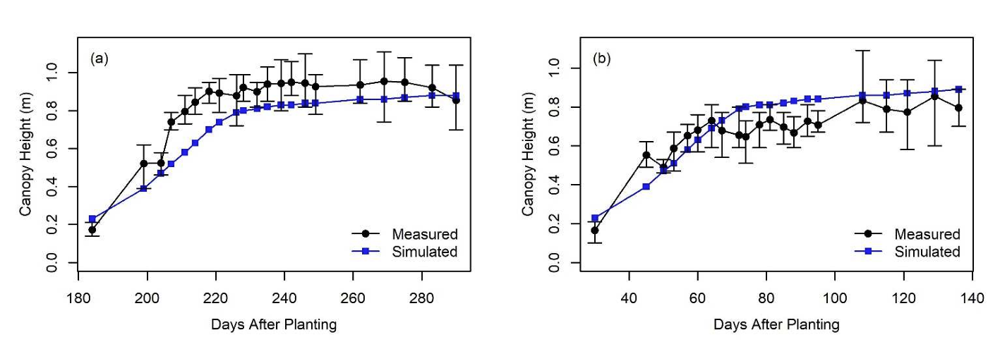

M.S. Research and Activities
I started my master's research wth a focus on particulate matter dispersion modelling and environmental regulation. I also conducted a proof-of-concept study on using ultraviolet light to aid automated detection of contaminants (primarily plastics) in cotton using MATLAB image processing and computer vision techniques. A semester in, I became interested in international development and water-energy-food nexus issues. I was selected for the Agricultural and Natural Resource Policy program, a joint effort with the United Nations Food and Agriculture Organization, where I learned more about international agriculture, global food and water security, and data-driven policy approaches.

To enable my
continued independent study of those subjects, I joined a project with Drs. Munster and Ale on
irrigation and crop modelling in the Texas High Plains. The ultimate goal of the project
was to inform irrigation strategy decisions using a calibrated and validated
DSSAT CROPGRO-Cotton model.
I recieved funding to participate in the Environmental Science and Engineering
Study Abroad program in Leuven, Belgium, which increased my awareness of international environmental
issues and solutions, and I later served as a teaching assistant for the same program.
Throughout my time as a graduate student at A&M I competed as part of our agricultural
robotics team, which was a fun exercise in 3-D modelling, coding, sensor calibration,
autonomous navigation, and small robotic system design and fabrication.
Committee Co-Chairs: Dr. Srinivasulu Ale & Dr. Clyde Munster
Committee Member: Dr. Gaylon D. Morgan
Thesis Title: Calibration and Verification of DSSAT CROPGRO-Cotton Model for Deficit Irrigation Management in the Texas High Plains
Thesis Abstract: The Texas High Plains form a unique region that has been a vital part of U.S. grain and fiber production for many decades. Areas in the Texas High Plains are experiencing the effects of conflicting interests in a diminishing water source, the Ogallala Aquifer. Proposals have been made to limit the quantity of water withdrawn from the aquifer for irrigation purposes, leading to increased interest in the adoption of efficient irrigation strategies. Decision Support System for Agrotechnology Transfer (DSSAT) is a modeling software that uses meteorological, soil, and field experimental data to predict crop growth, development, and yield, and it is very useful for evaluating the efficiency of crop and irrigation management strategies. This study details the calibration and verification of a DSSAT experiment based on an unpublished 2008 field study performed by the United States Department of Agriculture Agricultural Research Service (USDA-ARS) and the use of the calibrated model for determining best irrigation strategy in terms of crop yield and water use efficiency. The field study was conducted to compare the effects of different irrigation strategies on cotton yield. Due to the wealth of in-season data that was collected, these field data provided more opportunities for comparison between the experimental crop and the modelled crop than was available for past calibrations. Data from highly irrigated fields that experienced little water stress were used to calibrate the model, and the remaining deficit irrigation field data were used exclusively for verification of the calibrated model. The parameter values chosen in the final calibration were used in further irrigation simulation experiments. These were conducted over a testing range for four separate irrigation strategies to determine what minimum irrigation amount would yield the maximum yield and which strategy is the most efficient. The DSSAT CROPGRO-Cotton model demonstrated potential to simulate the effects of various irrigation strategies on cotton yield, and the 12mm, 7.5 hr Time Temperature Threshold strategy was found to be the strategy to achieve a maximized yield with the greatest water use efficiency.
Link to Thesis